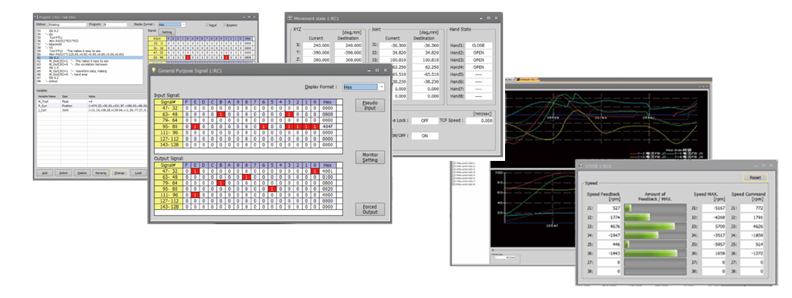
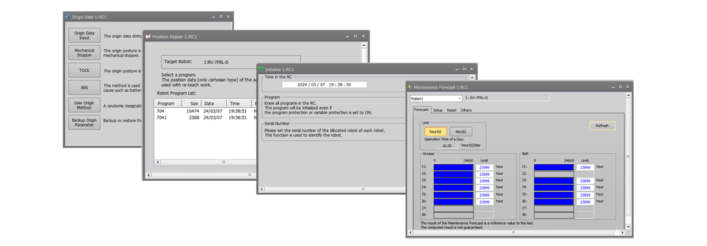

Robot engineering software (MELFA)MELSOFT RT ToolBox3

Fungsi pemantauan
Status eksekusi program, variabel, sinyal I/O, dll. dapat dipantau.
- Selain memantau status program yang dijalankan, variabel, sinyal input/output, dan kejadian lainnya, fungsi ini dapat menampilkan grafik bentuk gelombang operasi robot (kecepatan dan nilai saat ini) dan status I/O secara real time.
- Hal ini memudahkan untuk melihat korelasi antara langkah eksekusi program dan data bentuk gelombang, sehingga proses debugging menjadi jauh lebih efisien.

Fungsi pemeliharaan
Fungsi pemeliharaan meliputi prakiraan pemeliharaan, dukungan pemulihan posisi, manajemen parameter, dll.
Perangkat lunak ini efektif untuk pemeliharaan preventif dan memperpendek waktu pemulihan.
- Dilengkapi dengan fungsi prakiraan pemeliharaan yang memberi tahu pengguna tentang waktu pelumasan robot dan masa pakai baterai, serta fungsi bantuan untuk pemulihan posisi jika terjadi masalah.
- Data dikelola berdasarkan proyek, untuk memungkinkan pencadangan kolektif seluruh sistem.
